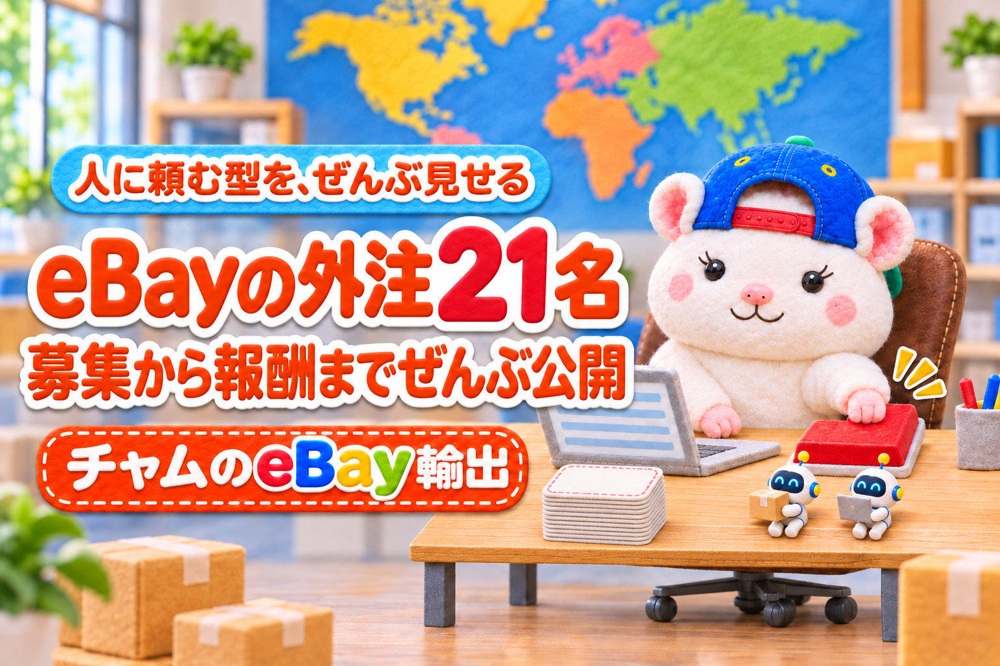

eBayで売れるほど、手が足りなくなる。
リサーチ、出品、値段の見直し、お客さんへの返信、梱包、発送。
全部ひとりでやっていると、寝ている間も、出かけている日も、店は止まります。
「そろそろ、だれかに頼みたい」
その気持ち、よく分かります。
前のぼくも、まったく同じでした。
だから人に頼みました。
多いときは外注さん21名。
3つのアカウントを回して、月の利益は200万円弱までいきました。
人に頼むときに大事なのは、腕のいい人を探すことより、先に「型」を作ることです。
ぼくが2年前に回していた型は、この7つです。
- 仕事を分けて、1つずつ頼む
- 募集には、仕事の中身をそのまま書く
- 面接では、続けられるかを見る
- 試用の20品で、慣れるまでの壁を越えられるか見る
- ◯✕とコメントで育てる
- 報酬は出来高で、計算できる形にする
- 判断の線を決めて、マニュアルにする
この記事を書いた人

この記事は、前は外注さん21名でeBayを回し、月の利益200万円弱までいったチャムが書いています。
いまは梱包以外をAIに任せて、初月から利益10万4,286円でした。
人に頼みたいのに、何から頼めばいいか分からない
人に頼みたいと思っても、手が止まる理由は3つです。
- 何を頼めばいいか、仕事が分かれていない
- どこで、どんな人を探せばいいか分からない
- 頼んだあと、どう教えればいいか分からない
全部を1人に頼むと、教えることも全部になります。
だから、仕事を分けるところから始めます。
人に頼むなら、この7つの順番で
| # | 手順 | ぼくの店でやっていたこと |
|---|---|---|
| 1 | 仕事を分ける | リサーチ・価格調整・顧客対応・仕入れ・梱包発送など役割ごとに |
| 2 | 募集する | クラウドワークスで、仕事の中身をそのまま書く |
| 3 | 面接する | 応募があったらWeb面接 |
| 4 | 試用する | 利益が出る商品を20品リサーチ |
| 5 | 育てる | 教育担当が◯✕とコメント |
| 6 | 払う | 出来高(件数×単価+利益の一部) |
| 7 | 線を決める | 判断の基準をマニュアルに |
1. 仕事を分けて、1つずつ頼む
最初に頼むのは、時間がかかって、判断が少ない作業です。
例えば、ぼくの店では、こう分けていました。
- リサーチ(出品まで)
- 価格調整
- 顧客対応
- 仕入れ
- 梱包発送
- 模倣セラーへの対策
- 教育担当(アカウントごとに1人)
リサーチの人には、出品まで頼みました。
見つけた人がそのまま出品すると、受け渡しの手間が消えるからです。
教育担当は、アカウントごとのリーダー役です。（3アカウントにそれぞれ1名ずつ）
ぼくが全員を見なくても、店が回るようにするためです。
2. 募集には、仕事の中身をそのまま書く
募集はクラウドワークスでした。
「eBayのお仕事」とだけ書くと、思っていた仕事とちがう人が来ます。
何をするのか、1件いくらなのか、最初の試用があることまで、先に書きます。
3. 面接では、続けられるかを見る
応募があったら、Web面接をしていました。
eBayのリサーチは、慣れるまで大変です。
最初から上手な人より、慣れるまで続けられる人のほうが残ります。
4. 試用の20品で、慣れるまでの壁を越えられるか見る
試用期間は、利益が出る商品を20品リサーチしてもらいました。
20品やると、その人の向き不向きが見えます。
eBayのリサーチは、ここを越えられるかどうかがいちばんの分かれ目です。
5. ◯✕とコメントで育てる
育て方は、シンプルです。
- まずはリサーチだけしてもらう
- 教育担当が◯✕をつける
- ◯なら出品してもらう
- 出品したものに、また◯✕をつける
◯✕だけでなく、コメントも書きます。
例えば、こんなコメントです。
最初なのに非常に良いです!
送料を訂正しました。それでも利益は出るので出品しますね!
リサーチシートは1人1枚です。
参考にしたSOLD、いまの最安、仕入元、出品価格、送料、利益額まで、同じ型で書いてもらいました。
型が同じだと、◯✕をつける人も迷いません。
6. 報酬は出来高で、計算できる形にする
報酬は、出来高にしていました。
| 作業 | 報酬 |
|---|---|
| リサーチ | 1件80円+売れたときの利益の10% |
| 梱包発送(小型) | 1件150円 |
| 梱包発送(大型) | 1件400円 |
| 仕入れ | 1件100円 |
リサーチに「売れたときの利益の10%」をつけたのは、売れる商品を探す理由を作るためです。
件数だけだと、数を出すことが目的になります。
毎月、支払通知書を作って送っていました。
7. 判断の線を決めて、マニュアルにする
外注さんがいちばん困るのは、「これは自分で決めていいのか」です。
だから、判断の線を先に決めました。
例えば、顧客対応はこうです。
- 値下げ交渉が元値の80%以上なら、ぼくに回す
- 80%未満なら、5%オフのクーポンを送る
- 破損や付属品なしは、一部返金(20ドル〜)を提案し、合意したらぼくに回す
- キャンセルは、理由を聞いてから受ける
毎日やることも、表にしていました。
メッセージは毎日、未読をゼロに。
見込みのお客さんには、毎日5%オフのオファーを送る。
線があると、外注さんは迷わず動けます。
ぼくに届く質問も減ります。
人に頼むと、増える手間もある
正直に書くと、人に頼むと、人の手間が増えます。
- 内容の確認
- モチベーションを保つこと
- 新しい取り組みのときの教育
- マニュアル作り
- 採用の面接
- 報酬の計算
- 支払い
外注費は、毎月30万円台でした。
この手間は、いまならAIで一気に減らせます。
ぼくもいまは、梱包と発送以外をAIに任せています。
それでも、まずは人に頼むところから始めてもいいと思います。
人に頼むと、自分の仕事が分かれて、判断の線が見えてくるからです。
ちなみに、梱包をお願いしていた方は、2年たったいまも梱包と、別の事業の仕事を続けてくれています。
まとめ
人に頼むときに大事なのは、腕のいい人を探すことより、先に型を作ることです。
ぼくが外注さん21名で回していた型は、この7つです。
- 仕事を分けて、1つずつ頼む
- 募集には、仕事の中身をそのまま書く
- 面接では、続けられるかを見る
- 試用の20品で、慣れるまでの壁を越えられるか見る
- ◯✕とコメントで育てる
- 報酬は出来高で、計算できる形にする
- 判断の線を決めて、マニュアルにする
全部を一度にやらなくて大丈夫です。
まずは、いちばん時間を取られている作業を1つ、だれかに頼んでみてください。
あなたなら、最初にどの作業を頼みますか?🐹
▼中の人🏠(レンタルスペース23部屋・売上1.5億)のレンスペ実録

▼ブログ(eBay×レンスペ、全記事まとめ)

▼この店のやり方は、ぜんぶ1冊にまとめてあります
リサーチ・出品・値付け・顧客対応まで、初月利益10万4,286円を出した実店舗の記録と手順を全部書いた教科書です。
読んだその日から、AI社員の作り方をそのまま真似できます。
『AI × eBay輸出の教科書 — 梱包以外、ぜんぶAI』


🎁 2026年10月22日に第3版になりました。顧客対応 完全自動化ツール・ストアドクター・AI自動化コーチなど付録6つは、これまでに買った人も含めて購入者全員に無料で受け取れます。
内容・最新価格は販売ページをご確認ください。